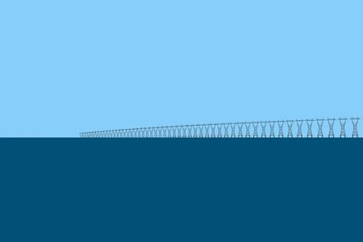
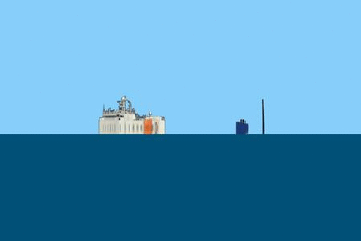

Welcome to refraction_render’s documentation!¶
|  |  |
{kind=link}
This is a python package which is a very simple ray tracer which allows the user to ray trace simple topographical data as well as images in the presence of atmospheric refraction. The package includes tools to calculate the standard atmospheric model for an arbitrary temperature profile. From this profile it can generate an index of refraction profile. The Rays trajectories are solved for using Fermat’s principle.
This is a python package which uses SciPy, NumPy, Numba, pyproj and six so make sure these packages are installed before installing this code. Another useful package is gdal, this is not a requirement to run this code however it is sueful for loading topographical data into python.
To install simply download the code and from the top directory run python setup.py install. To record the installation directory add the option --record <file_name> to record the installation path to a file. On unix systems one can easily uninstall the package by running cat <file_name> | xargs rm -rf.